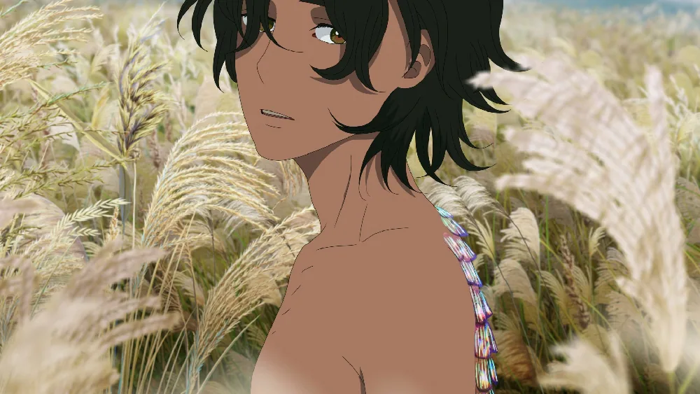
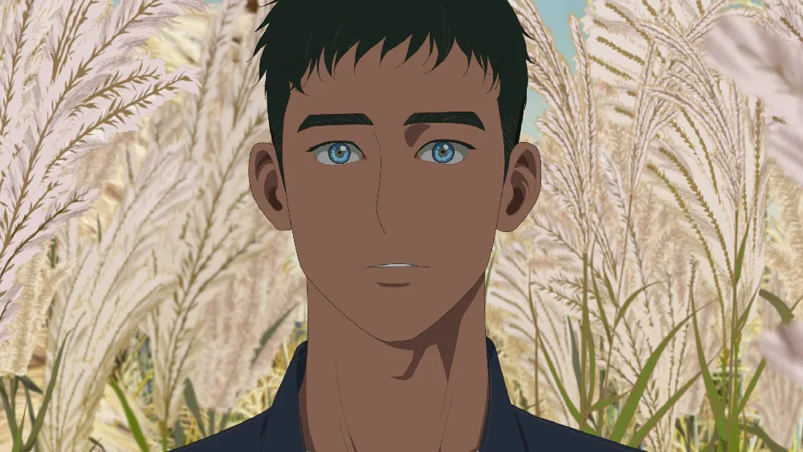
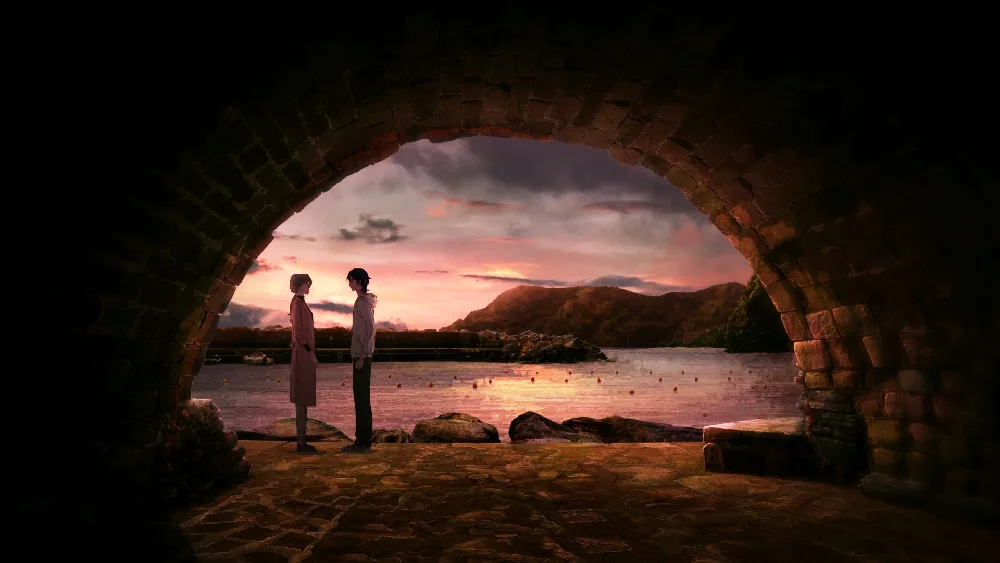
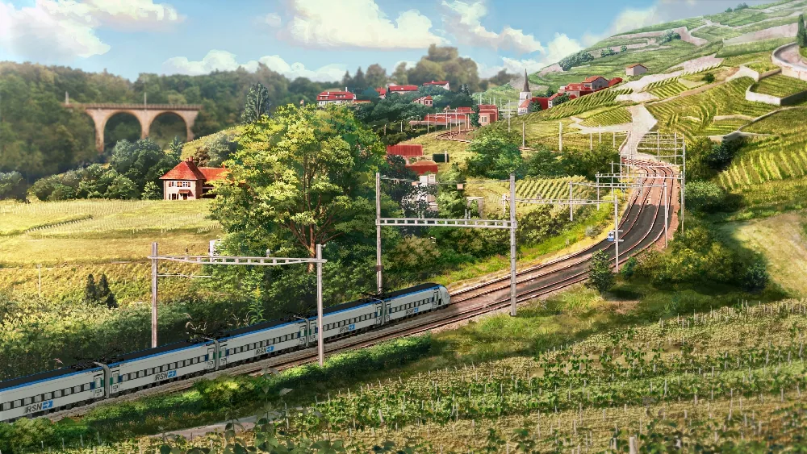
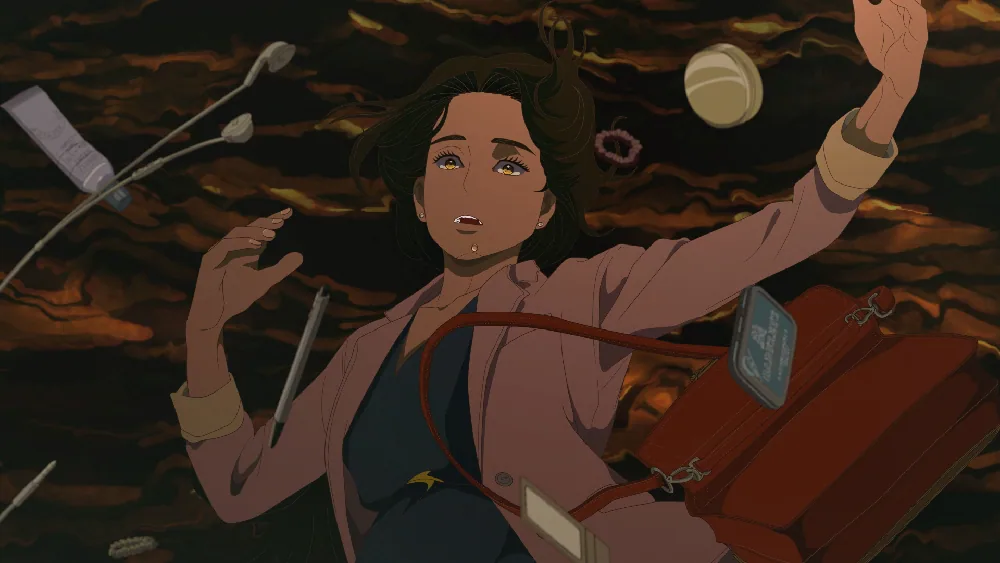
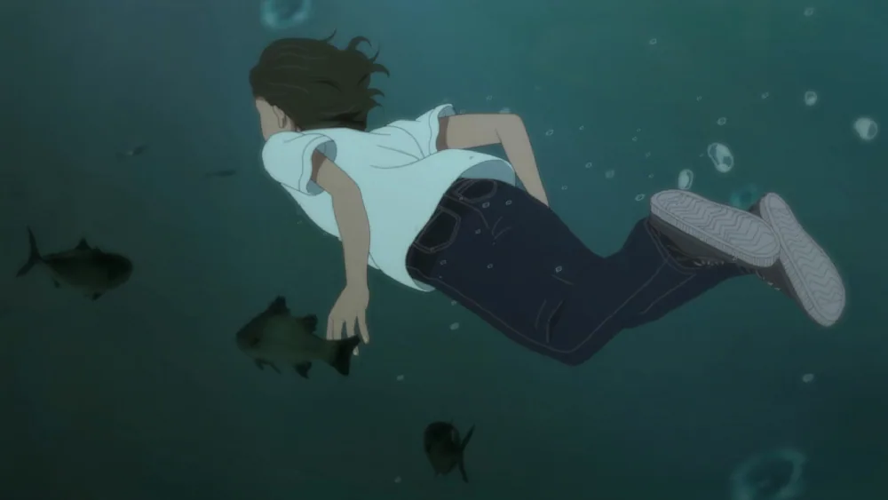

결국, 외로움의 이야기
<아가미>는 외로움에 허우적거리는 세 사람의 이야기다. 배우의 꿈을 이루려는 어머니 이녕(김선영)에게 버림당하고 외할아버지(유재명) 아래서 홀로 자란 강하(강하늘), 호수에서 홀로 건져졌으나 목덜미에 아가미가 나 있고 등에 비늘이 자라기 시작한다는 이유로 세상에 제 정체를 감추고 살아야 했던 곤(정해인), 어머니를 요양하느라 청춘을 흘려보낸 해류(이청아)까지 세 명의 이야기는 하나의 소실점으로 모이면서 강렬한 감정의 소용돌이를 자아낸다.
그 시작은 평범한 회사원 해류가 다리 난간 아래에 떨어진 핸드폰을 주우려다 강가에 빠지면서부터다. “나는 자살 희망자가 아니었다”라고 독백에서 드러나듯 그날 해류의 하루는 그녀를 원치 않는 죽음으로 몰고 갔다. 그날 밤 남자 상사의 비위에 거슬리지 않게 하려고 울며 겨자 먹기로 술을 한 잔 마셨다. 어머니를 요양해야 한다는 마음에 회사를 차마 나오지 못하고 있다. 해류는 강가에 빠져도 이상하지 않은 존재로, 오히려 강가에 빠지기를 원하는 인생을 살아가고 있었다. 그렇게 죽으려는 찰나에 곤이 그녀를 강에서 구하고 홀연히 사라진다. 그로부터 1년이 흐르고 어머니가 죽은 뒤 해류는 페이스북으로 곤의 정체를 수소문한 끝에 강하를 만난다.
강하는 곤의 이야기를 그녀에게 들려준다. 그로부터 시간이 흘러 한 가게에서 점원으로 일하던 곤은 손님으로 온 해류에게 강하를 아냐는 질문을 받는다. 해류는 곤에게 강하의 이야기를 전하면서 충격적인 진실을 알려준다. 이처럼 <아가미>의 서사는 꼬리에 꼬리를 물고 이어지지만 산만하지는 않다. 영화 초반부에 자동차를 몰고 호수로 달려드는 곤의 아버지와 강에 빠지는 해류를 연결하는 교차편집은 (이녕까지 포함해) 물이라는 이미지로 수많은 캐릭터의 감정을 연결한다. 각 캐릭터가 품은 지독한 외로움은 잘못된 방향으로 흘러가면서 서로 엇갈린 운명으로 이르게 한다. <아가미>는 그 외로움을 섬세한 미감으로 시각화하는 데에 성공한다.


<아가미>, 원작과 무엇이 다른가
소설 <아가미>의 독자라면 이 영화화가 제법 도전적으로 다가올지도 모른다. 계곡의 민박촌, 호숫가 마을인 이내촌 등 소설 속 한국적 장소를 프랑스와 이탈리아로 그려서다. 초반부에 해류가 추락하는 다리는 파리에 있는 <퐁네프의 연인들>(1992)에 등장한 퐁네프 다리를 모티프로, 해류와 곤이 대화하는 강가는 애니메이션인 <루카>(2021)에 나온 이탈리아 베르나차를 모티프로 했다. 후반에 홍수가 쏟아지는 강하의 도시는 곤돌라가 가득한 베니스를 모티프로 그려냈다. 외할아버지 집과 호숫가 마을은 유럽의 한적한 중소 도시 같다.
원래 안재훈 감독은 원작 분위기를 반영해 1990년대부터 2000년대 초반까지의 한국 풍경을 염두에 두고 작업을 시작했다고 언론 시사회에서 이야기했다. 다만 구병모 작가의 아름다운 문체와 그 깊이를 소화하기 위해, 또 익숙한 장소를 탈피하려고 유럽 로케이션을 선택했다고 이야기한다. 이는 경제적이고 효율적인 선택이기도 하다. 소설 초반부에 해류가 빠지는 강은 여러 정황을 미루어 보았을 때 한강을 연상할 수밖에 없다. 다만 애니메이션에서 광활한 한강을 그리기는 꽤나 까다롭다. 그뿐만 아니다. 민박촌 사장과 대학생 무리, 재개발된 마을의 풍경과 이내호를 24시간 순찰하는 경찰 등 잔가지를 쳐내고 서사와 캐릭터의 심리에 집중해 그려내려고 한다. 이 유럽 마을은 한국적인 풍경과는 다르게 주인공이 이국에 떨어져 있다는 공허와 외로움을 환기하기도 한다. 거기다 구조도 선명히 수정했다.
소설에서는 해류의 1인칭 서술과 3인칭 서술이 교차한다. 먼저 3인칭 서술로 강하와 곤의 과거를 펼쳐 보인 다음에야 해류의 1인칭 서술이 드러난다. 후반에 해류의 1인칭이 해류가 곤에게 하는 이야기로 밝혀진다. 영화 <아가미>는 해류가 강하와 곤에게 가서 이야기를 꺼내는 상황을 먼저 그린다. 강하의 이야기를 해류가 전달하는 설정을 드러내 3인칭 서술의 역할을 대신하고 이야기 속 강하의 감정을 드러내려고 한다. 그렇게 관객이 곤과 강하의 과거사를 집중해 볼 수 있도록 배려하면서도 감정을 깊게 그려낸다.


다만 구병모 작가 특유의 만연체가 전달하는 감정이 어쩔 수 없이 생략된 지점도 있다. 사실 구병모 작가의 소설은 영화화하고 싶은 충동을 불러일으키기에 충분하다. 카메라가 롱테이크를 하듯 특정 대상을 지정한 다음에 그 대상의 디테일을 하나하나 상세히 적어 내려서다. 이때 만연체는 독자에게 어떤 한 대상을 자세히 보도록 강제하므로 사건의 진행 속도를 더디게 만든다. 대신 문장이 이어져 그 대상을 둘러싼 정보를 상상의 대상으로 바꾼다. 문장이 쌓일수록 이미지도 선명해지므로 마치 영화를 보는 듯한 착각을 선사한다. 구병모의 만연체는 이렇게 영화적인데, 영화화가 어려운 이유도 바로 거기에 있다.
구병모 작가의 문장은 한 상황이 생긴 정황을 먼저 드러낸 다음 그 정황이나 대상을 둘러싼 긴 해석이 더해진다. 즉 카메라 렌즈처럼 가장 객관적으로 대상을 해부한다고 생각한 묘사가 가장 주관적으로 대상을 해석하는 진술에 가깝다. 이는 영화보다 애니메이션의 문법에 가깝다. 집요하고 상세한 진술은 이중적 감정이 진술에 묻어나올 수 있게 만든다. 곤이 처음 등장할 때 해류가 들은 “자연에 존재하는 어떤 소리와도 닮지 않았고 컴퓨터로 만들어 낼 수 있을 것 같지도 않”1)은 곤의 목소리처럼 구체화할 수 없는 문장도 더러 있다.
이를 고려해도 몇몇 감정이 사라질 수밖에 없는 각색은 아쉬움을 준다. 특히 곤이 처음 이내호에 빠진 아이를 구한 날 강하가 곤에게 분노할 때 “정작 강하가 견딜 수 없었던 것은 결코 자신의 손이 닿을 수 없는 호수의 바닥, 그 깊이였다. 자신이 가지 못하는 곳에 곤이 있다는 사실이 주는 거리감과 언젠가는 곤이 정말로 한 마리의 물고기가 되어 다른 물고기 떼들 사이로 깊이깊이 헤엄쳐 들어가 다시는 나타나지 않을 수 있다는 생각”2)은 잘 묘사되지 않는다.
몇몇 심리 묘사를 생략해 곤을 폭력적으로 대하면서도 떠날까 두려워하는 강하의 나약함이 덜 드러난 점이 아쉬움을 남긴다. 한편 마약 중독자인 이녕이 본 환상은 사이키델릭 문화에서 흔히 쓰는 색채를 가져와서 소설에 충실하게 그리며 놀라움을 자아낸다. 해류의 내레이션이 가진 문어체를 살린 점도 인상적이다. 이처럼 문체의 매력을 어떻게든 살리려 노력한 점이 속된 말로 ‘졌지만 잘 싸웠다’라는 감상을 안긴다.
1) 구병모, <아가미>, 위즈덤하우스, 2018, 17쪽.
2) 구병모, <아가미>, 위즈덤하우스, 2018, 97쪽.
1) 구병모, <아가미>, 위즈덤하우스, 2018, 17쪽.
2) 구병모, <아가미>, 위즈덤하우스, 2018, 97쪽.


스튜디오 ‘연필로 명상하기’의 진화
<아가미>의 의의는 한 스튜디오가 자신의 색채를 굳히고 확장했다는 데에 있다. 안재훈·한혜진 감독을 필두로 하는 스튜디오 연필로 명상하기는 2010년대 중반부터 한국 근대 소설을 원작으로 하는 애니메이션을 제작했다. <메밀꽃, 운수 좋은 날, 그리고 봄봄>(2017), <소나기>(2017)와 <무녀도>(2021)가 그 사례다. 이 세 편의 영화는 안재훈 감독이 오랜 시간 끈질기게 고민한 ‘한국적 애니메이션이란 무엇인가?’라는 질문에 대한 대답이다. (연필로 명상하기는 <무녀도>까지 종이와 연필로 그리는 제작을 고수했다.) 세 편의 영화는 손수 수채화풍으로 그린 시골 풍경과 일제강점기의 도심 등을 후경에 배치하고, 정갈한 선으로 디자인한 정겨운 캐릭터를 전경에 배치하며 이야기를 펼쳐나간다.
<소중한 날의 꿈>(2011)에서부터 이 스튜디오가 그리는 풍경은 최소한의 움직임을 가져서 캐릭터가 마치 그림에 들어와 살아 있는 듯한 느낌을 선사한다. 특히 <메밀꽃, 운수 좋은 날, 그리고 봄봄> 첫 번째 에피소드 <메밀꽃 필 무렵>의 메밀꽃이 핀 메밀밭은 ‘흐드러지다’의 어감을 시각화하기 위해 꽃 하나하나를 선으로 선명히 그리기보다는 점묘화에 가깝게 그려낸다. 사실적 작풍을 고수하되 한국어의 고유한 느낌이 살아야 하는 문장에서는 환상적 터치를 가미한다. 이는 어떤 단어가 수많은 뉘앙스로 변주될 수 있는 한국어가 품은 서정성을 성공적으로 포착한다.
반면에 전경에 배치되는 캐릭터는 선명하게 그려져 있다. 감독은 과장된 표정이나 리액션 등 데포르메를 최소화해 캐릭터의 감정을 그려내고 그다음 캐릭터가 원작의 대사를 고스란히 뱉게 한다. 가미된 대사가 더러 있기는 해도, 원작의 대사가 품은 의미는 살아 있다. 캐릭터 디자인도 보통의 한국 사람을 보는 듯한 얼굴상을 가지고 있다. 어쩌면 빈티지하다고 할 수 있을 미감이다. 이처럼 안재훈 감독은 리얼리즘을 고수하되 문장이 가진 특유의 결을 데포르메로 그려내면서 한국적 애니메이션의 가능성을 발견한다. 지금껏 설명한 애니메이션의 미덕은 <메밀꽃, 운수 좋은 날, 그리고 봄봄> <소나기> <무녀도> 등이 관객이 교과서에서 익히 접한 텍스트라서 가능한 것이었을지도 모른다. 그 외연을 확장해야 했던 것은 당연한 수순이었을지도 모른다.
디지털로 제작된 <아가미>는 스튜디오 연필로 명상하기의 한국적 색채를 확장했을뿐더러 더욱 선명한 개성을 드러내는 작품이다. 미장센에 배치된 사물의 선은 선명해졌으나 수채화를 보는 듯한 느낌은 살짝 반감되었다. 대신 카메라 움직임이 훨씬 활발해졌고, 물의 흐름이 시각화되었다. 거기서 생기는 역동성과 벡터의 자유로운 활용도 눈에 띄었다. 무엇보다 전경과 후경의 구분이 사라지고 물이나 수레, 구름 등 배경에 있는 요소가 캐릭터의 행동이나 정서에 직접적인 영향을 주어서 전보다 더 생생한 세계관이 그려진다는 점은 장점으로 다가온다. 특히 수중에서의 드라마틱한 명암 대비, 외할아버지 집의 디테일은 현장감을 준다.
캐릭터 디자인도 진일보했다. 곤의 아가미와 비늘을 잘 살렸을뿐더러 캐릭터 디자인을 세련된 미형으로 설정하고 눈동자를 강조해 캐릭터의 개성을 한껏 살렸다. 다만 미묘한 근육의 움직임이 없어서 캐릭터의 감정이 대사에 담긴 감정과는 다르게 경직되어 다가온다는 느낌은 지우기 어렵다. 구병모 작가의 문장은 각각의 표정이나 몸짓을 깊이 파고든다는 점을 고려했을 때, 표정에 조금 더 큰 움직임을 주었어도 되지 않았을까 하는 아쉬움이 남는다. 강하늘과 정해인, 이청아, 유재명, 김선영 등 실사 연기의 색채가 강한 배우를 성우로 쓴 만큼 배우의 목소리 연기와 그 배우가 평소에 하는 표정 연기를 생각했을 때, 둘이 명확히 이어지지 않는 차이도 두드러진다.
그럼에도 아날로그 감성은 <아가미> 곳곳에 남아 있다. 그 감각이 영화 곳곳에 드러날 때가 있다. 엔딩에서 해류의 이야기를 들은 곤이 강하와의 추억을 되돌아보며 갈대밭에 있는 순간이 그러하다. 사실적 자연 배경과 흔들리는 눈동자의 역동적 표현이 어우러질 때의 강렬함은 결코 잊기 어렵다. 당연히 영화에 아쉬움이 없지는 않다. 그런데도 <아가미>에서 스튜디오 연필로 명상하기만의 개성으로 볼 수 있는 순간이 보일 때마다 반가운 마음이었다. 어떤 하나의 스타일이 짙어졌다는 건 곧 그것을 깨고 등장할 또 다른 스타일의 탄생을 예고한다는 것이니까.
<아가미> 메인 예고편